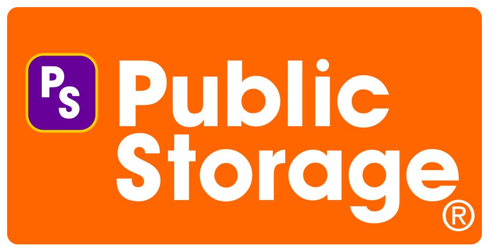

Public Storage
Public Storage는 미국에서 셀프스토리지 시설에 투자하고 운영하는 부동산투자신탁이다. 미국 최대 셀프스토리지 서비스 브랜드이며 임차인 보험과 포장 제품도 제공한다.
최종 업데이트

Public Storage는 어떤 브랜드인가
핵심 사업은 셀프스토리지 시설을 보유하고 임대해 수익을 얻는 부동산 사업이다. 2024년 12월 31일 기준 3,073개 시설에서 총 221 million net rentable square feet의 공간을 운영한다.
미국 셀프스토리지 면적의 약 9%를 보유하며, 전체 매출의 90% 이상을 셀프스토리지 운영에서 창출한다. 자체 시설 운영 외에도 다른 소유주가 보유한 셀프스토리지 시설 307개의 관리를 담당한다.
보관 공간 임대와 함께 임차인 보험 및 포장 제품을 제공해 관련 사업을 구성한다.
Public Storage는 어떻게 시작되고 성장했나
Wayne Hughes와 Kenneth Volk Jr.가 1972년 $50,000를 투자해 Private Storage Spaces Inc.라는 이름으로 사업을 시작했다. 첫 창고는 같은 해 캘리포니아 엘카혼에 건설했으며, 명칭이 사설 시설이라는 혼동을 일으키자 PS라는 약자에 맞춰 현재 이름으로 변경했다.
첫 시설은 개장 3개월 만에 점유율 35%로 손익분기점에 도달했고, 1974년까지 20개 시설을 건설했다. 부동산 유한책임조합을 통한 투자 자금으로 확장해 1989년 1,000개 지점에 도달했다.
1995년 Storage Equities와 합병하며 공개 거래되는 부동산투자신탁으로 재편했다.
Public Storage의 브랜드 아이덴티티는 무엇인가
보관 시설의 직접 운영을 중심으로 임차인 보험, 포장 제품, 제3자 시설 관리를 결합한 사업 구성이 구별점이다.
Public Storage의 대표 제품과 서비스는 무엇인가
주요 사업은 셀프스토리지 시설을 직접 보유하고 고객에게 순임대 가능 공간을 제공하는 운영 사업이다. 시설 임차인에게 보관 물품을 위한 보험 서비스를 제공하며, 이를 위해 1984년 PS Reinsurance를 설립했다.
보관과 이사에 필요한 포장 제품도 판매하며, 보험 및 포장 제품 사업은 셀프스토리지 운영을 보완한다. 자체 소유 시설 외에 다른 소유주의 셀프스토리지 시설 307개를 관리하는 제3자 시설 관리 사업도 수행한다.
Public Storage는 지금 어떤 상태인가
2024년 12월 31일 기준 3,073개 셀프스토리지 시설과 총 221 million net rentable square feet의 공간을 운영한다. 1995년부터 공개 거래되는 부동산투자신탁 구조를 유지하며 미국 셀프스토리지 면적의 약 9%를 보유한다.
2006년 인수한 Shurgard Storage Centers는 이후 분리됐으며, 회사는 지분 35%를 보유한다.
Public Storage 로고는 어떻게 변해왔나
자주 묻는 질문
Public Storage는 어느 나라 브랜드인가요?
Public Storage는 미국의 홈·라이프스타일 브랜드입니다.
Public Storage는 언제 설립되었나요?
Public Storage는 1972년 설립되었습니다.
Public Storage의 브랜드 아이덴티티는 무엇인가요?
보관 시설의 직접 운영을 중심으로 임차인 보험, 포장 제품, 제3자 시설 관리를 결합한 사업 구성이 구별점이다.
Public Storage의 대표 제품은 무엇인가요?
주요 사업은 셀프스토리지 시설을 직접 보유하고 고객에게 순임대 가능 공간을 제공하는 운영 사업이다.
Public Storage는 현재 어떤 상태인가요?
2024년 12월 31일 기준 3,073개 셀프스토리지 시설과 총 221 million net rentable square feet의 공간을 운영한다.
Public Storage의 창업자는 누구인가요?
Public Storage의 창업자는 B. Wayne Hughes입니다(위키데이터 기준).
Public Storage의 본사는 어디에 있나요?
Public Storage의 본사는 글렌데일에 있습니다(위키데이터 기준).
출처와 검증
Public Storage 관련 참고: 공식 웹사이트 · 위키데이터 Q1156045 · 영어 위키백과. 브랜드명은 한글과 원어를 함께 표기하되 데이터에 없는 표기는 만들지 않습니다. 기원 국가·설립연도는 검수된 정의문에서 확인된 값을 우선하고, 없을 때만 공식 웹사이트 URL이 일치하는 위키데이터 개체의 값을 씁니다. 위키데이터 값은 2026-09-12 기준입니다.